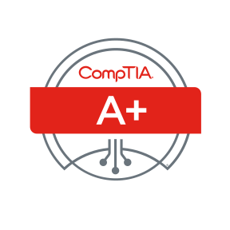

Paul Haynes
Summary
Highly technical IT Support Technician with excellent troubleshooting and interpersonal skills.
Possesses a Comptia A+ certification. Excels in assisting non-technical personnel with technology
issues and training users to become confident with their devices.

Education & Qualification
Comptia A+ Certified Computer Technician
January, 2018
College of Dupage:
Associate of Engineering Science
December, 2016
Associate of Applied Science for Computer and Interworking Technologies
May, 2018
Work Experience
IIT student OTS Support Desk assistant
10/2018- 2/2019
Geek Squad Consultation Agent
10/2016- 5/2018
IT Support Assistant
8/2016-8/2017
Leadership and Comunity Involememt
Eagle Scout
november, 2012
Vice President of College of Dupage Engineering Club
september 2013